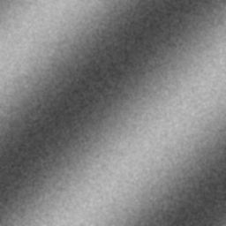
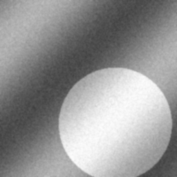
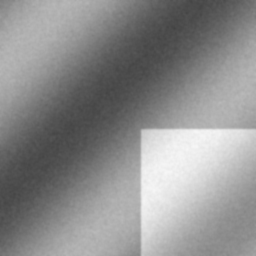
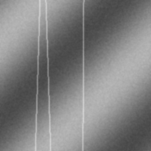
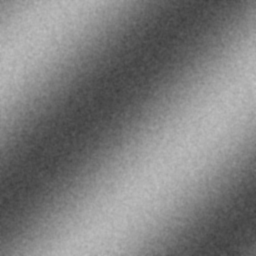
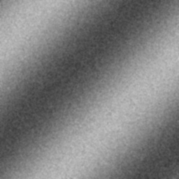
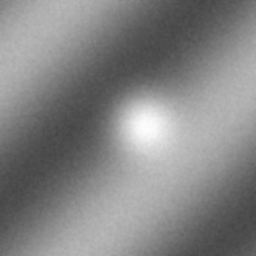
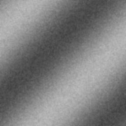
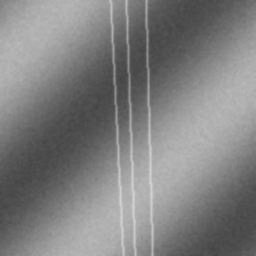

These images are generated placeholders mapped to the sample cases.

P001
diagnosis: Normal
modality: XRAY
age: 45
sex: M
notes: Clear lung fields, normal heart size, no acute findingsP002
diagnosis: Normal
modality: XRAY
age: 32
sex: F
notes: Unremarkable chest radiograph, age-appropriate findingsP003
diagnosis: Pneumonia (Right Lower Lobe)
modality: XRAY
age: 67
sex: M
notes: Consolidation in right lower lobe consistent with pneumonia. Clinical correlation recommended.P004
diagnosis: Bilateral Pneumonia
modality: XRAY
age: 54
sex: F
notes: Bilateral infiltrates, concerning for community-acquired pneumonia or COVID-19
P005
diagnosis: Pneumonia (Left Upper Lobe)
modality: XRAY
age: 71
sex: M
notes: Left upper lobe consolidation with air bronchograms
P006
diagnosis: Pleural Effusion
modality: XRAY
age: 59
sex: F
notes: Large right-sided pleural effusion. Thoracentesis recommended.P007
diagnosis: Pulmonary Edema
modality: XRAY
age: 78
sex: M
notes: Bilateral perihilar infiltrates consistent with pulmonary edema. CHF suspected.
P008
diagnosis: Fracture (Distal Radius)
modality: XRAY
age: 62
sex: F
notes: Colles fracture of distal radius with dorsal angulation
P009
diagnosis: Arthritis (Rheumatoid)
modality: XRAY
age: 56
sex: F
notes: Erosive changes in MCP joints, joint space narrowingP010
diagnosis: Normal
modality: XRAY
age: 28
sex: M
notes: Normal hand radiograph, no fracture or dislocation
P011
diagnosis: Normal
modality: CT
age: 42
sex: M
notes: No acute intracranial abnormality, normal brain parenchyma
P012
diagnosis: Brain Tumor (Glioblastoma)
modality: CT
age: 58
sex: M
notes: Large heterogeneous mass in right frontal lobe with surrounding edema
P013
diagnosis: Normal
modality: CT
age: 39
sex: F
notes: Normal abdominal CT, no acute abnormalityP014
diagnosis: Kidney Stone (Left)
modality: CT
age: 47
sex: M
notes: 4mm calculus in left proximal ureter causing mild hydronephrosis
P015
diagnosis: Meniscal Tear (Medial)
modality: MRI
age: 34
sex: M
notes: Vertical tear of medial meniscus posterior horn